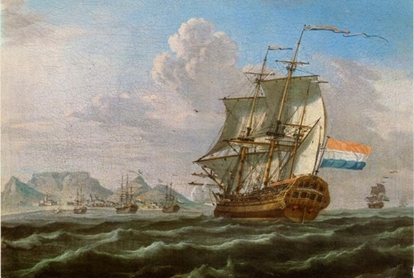

Tussen 1498 en 1595 was de specerijenhandel op Oost-Indië in volledige handen van de portugezen, Nadat Portugal en Spanje één land is geworden waar de De Republiek der verenigde Nederlanden mee in oorlog was werd het hen verboden in Spaanse en Portugese havens aan te doen. Daarop besloot de Republiek dat we de specerijen zelf maar moeten gaan halen. veel compagnieën ontstonden in deze tijd. maar al deze verschillende compagnieën zorgde voor veel onderlinge concurrentie. al deze compagnieën werden samengedrukt tot een sterke compagnie. De Verenigde Oostindische Compagnie, deze zou Economisch en Militair wapen worden van de Republiek en al snel meesters worden van de zeven zeëen
Door de jaren heen groeide de VOC tot een van de machtigste vloten ter wereld en maakte de Republiek voor een bepaalde tijd de machtigste staat ter wereld. tegenwoordig is de invloed van de VOC van vroeger nog steeds terug te vinden in Nederland en haar oude kolonies. en het Nederlandse volk leert nog steeds hoe belangrijk de VOC vroeger was voor vandaag